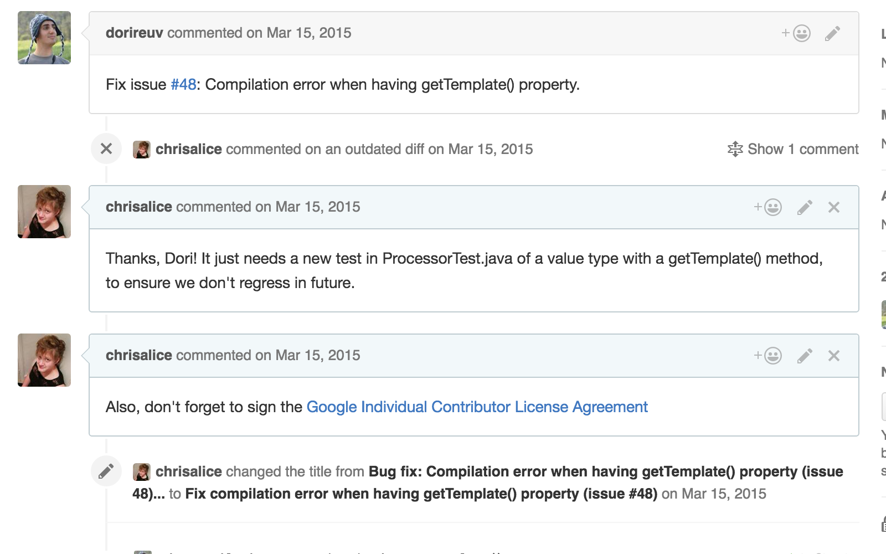

plugins {
id 'org.inferred.processors' version 'xx '
}
dependencies {
processor 'org.inferred:freebuilder:<current version> '
}
import org.inferred.freebuilder.FreeBuilder;@FreeBuilder public Person { interface You can also use an abstract class if you want to add private methods,
or concrete methods pre–Java 8./** Returns the person's full (English) name. */ String name();/** Returns the person's age in years, rounded down. */ int age();class Builder} Person bob = extends Person_Builder {}The Person_Builder class is generated by FreeBuilder. new Person.Builder().name( "Bob" ).age(23).build();
For a complete feature list, extensive README, and issue tracker, please see the project page on GitHub.
FreeBuilder is packed with things like...
@FreeBuilderinterface TopOfThePops {/** Artists who've released Number 1 hits. */ Set<String> artists();/** Best album each year. */ Map<Integer, String> albums();class Builderextends TopOfThePops_Builder {} }new TopOfThePops.Builder() .addArtists("Michael Jackson" ,"Billy Bragg" ) .putAllAlbums(albumsByYear) .build();
@FreeBuilderinterface BookShop {/** Shop assistants. */ Multiset<String> assistants();/** Books by category. */ Multimap<String, String> books();class Builderextends BookShop_Builder {} }new BookShop.Builder() .addAssistants("Bill" ,"Bob" ) .putAllBooks("Science Fiction" ,asList ("I, Robot" ,"Cyteen" )) .build();
@FreeBuilder @JsonDeserialize(builder = Person.Builder.class )public interface Person {/** Returns the person's full (English) name. */ String name();/** Returns the person's age in years, rounded down. */ int age();class Builderextends Person_Builder {} } Person person =new ObjectMapper().readValue("{\"name\":\"Bob\", \"age\":23}" , Person.class );
@FreeBuilder @GwtCompatible(serializable =true )public interface Personextends Serializable {/** Returns the person's full (English) name. */ String name();/** Returns the person's age in years, rounded down. */ int age();class Builderextends Person_Builder {} } RPC.encodeResponseForSuccess (someMethod, person);
BookShop bookshop = BookShop.Builder
.from The static from method turns a data object back into a Builder. "Terry" )
.mutateBooksThe modify and mutate methods let you pass in a lambda, for more readable code,
or to access collection methods not available on the builder API. (books -> {
Collection<String> sciFi = books.removeAll("Science Fiction" )This modifies the books collection on the builder. ;
books.putAll("sci-fi" , sciFi);
})
.mergeFromThe mergeFrom method combines collections. (existingBookshop)
.build();
// This code doesn't need to care about the ins-and-outs // of ISBN compliance (when we get around to implementing // it!), nor does it need any of the other fields we're // planning on adding to Book, so rather than have to fix // this test every time we modify Book, just pass in a // partial. Book book =new Book.Builder() .name("I, Robot" ) .isbn("Some ISBN" ) .buildPartial();// Skips validation // Whoops! Throws UnsupportedOperationException. book.publicationDate();

For a complete feature list, extensive README, and issue tracker, please see the project page on GitHub.